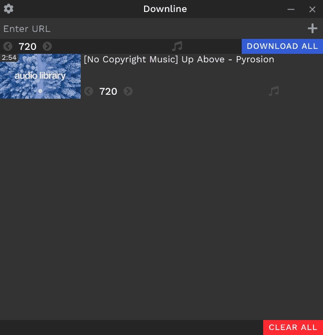

Downline
Free and open-source media downloader for YouTube and many other sites
Download the latest version
1.0.1
Windows Setup
54MB · exe
Windows Portable
54MB · 7z
Linux Executable
68MB · AppImage
Linux Portable
49MB · tar.xz
MacOS Portable
62MB · zip
Previous Versions & Changelog

Features
Works for links from
several sites
Choose audio and video quality (with support for 4K videos)
Pause and resume downloads
Download entire playlist and channel
Download and embed subtitles
Download multiple files simultaneously
Created and maintained by Arjun B
@jarbun